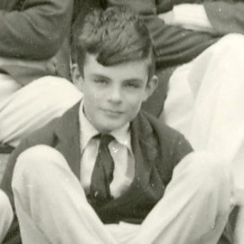

Breve resumo de sua vida
Familia
Turing nasceu em Maida Vale, Londres, enquanto seu pai, Julius Mathison Turing (1873-1947), estava
de licença de seu cargo no Serviço Civil Indiano (ICS) em Chatrapur, atual estado de Odisha, na
Índia. O pai de Turing era filho de um clérigo, o Rev. John Robert Turing, de uma família escocesa
de comerciantes sediada nos Países Baixos e que incluía um baronete. A mãe de Turing, esposa de
Julius, era Ethel Sara Turing (1881 - 1976), filha de Edward Waller Stoney, engenheiro chefe das
Ferrovias Madras. Os Stoneys eram uma família de nobres protestantes anglo-irlandeses do condado
Tipperary e do condado Longford, enquanto Ethel passara grande parte de sua infância no condado
Clare.
Escola
Seus pais o matricularam na St. Michael's, uma escola diurna em Charles Road, 20, St. Leonards-on-Sea, aos seis anos de idade. A diretora reconheceu seu talento desde o início, assim como muitos de seus professores. Entre janeiro de 1922 e 1926, Turing foi educado na Hazelhurst Preparatory School, uma escola independente na vila de Frant em Sussex (atualmente East Sussex). Em 1926, aos 13 anos, ingressou na Sherborne School, um internato independente na cidade comercial de Sherborne, em Dorset. O primeiro dia de aula coincidiu com a Greve Geral de 1926, na Grã-Bretanha, mas Turing estava tão determinado a participar, que andou de bicicleta desacompanhado pelos 97 quilômetros que separam Southampton de Sherborne, parando durante a noite em uma pousada.
